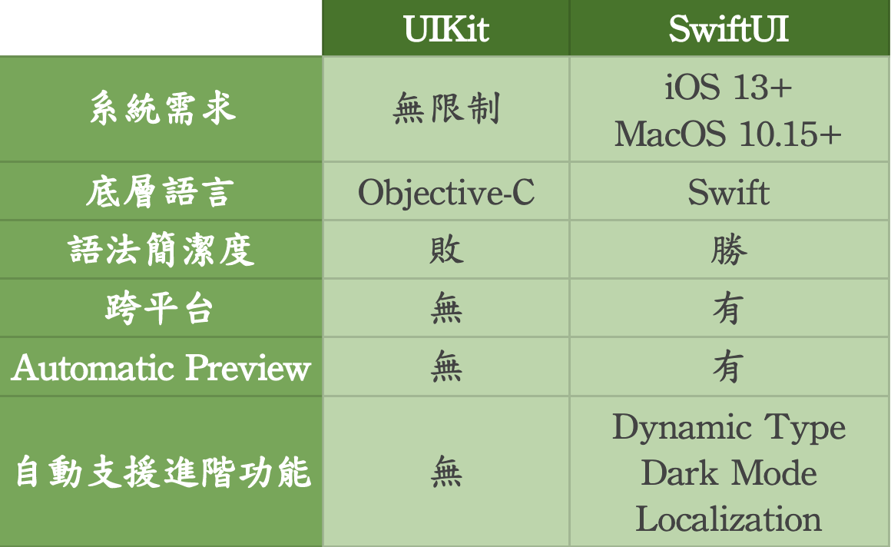
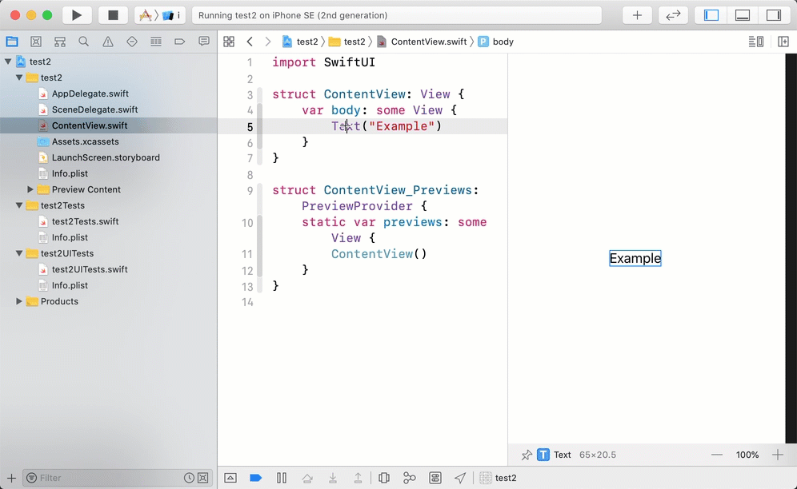
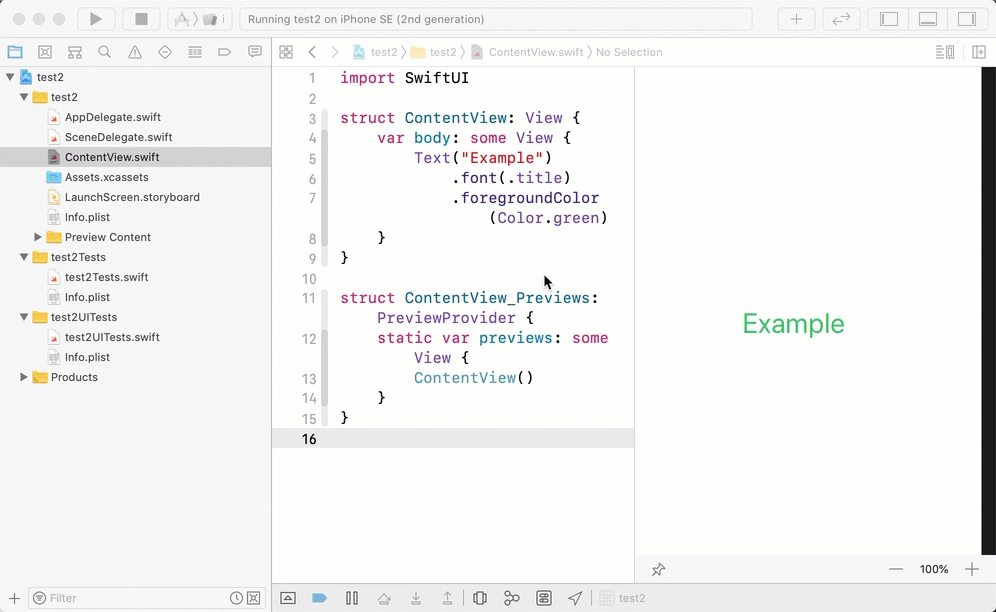
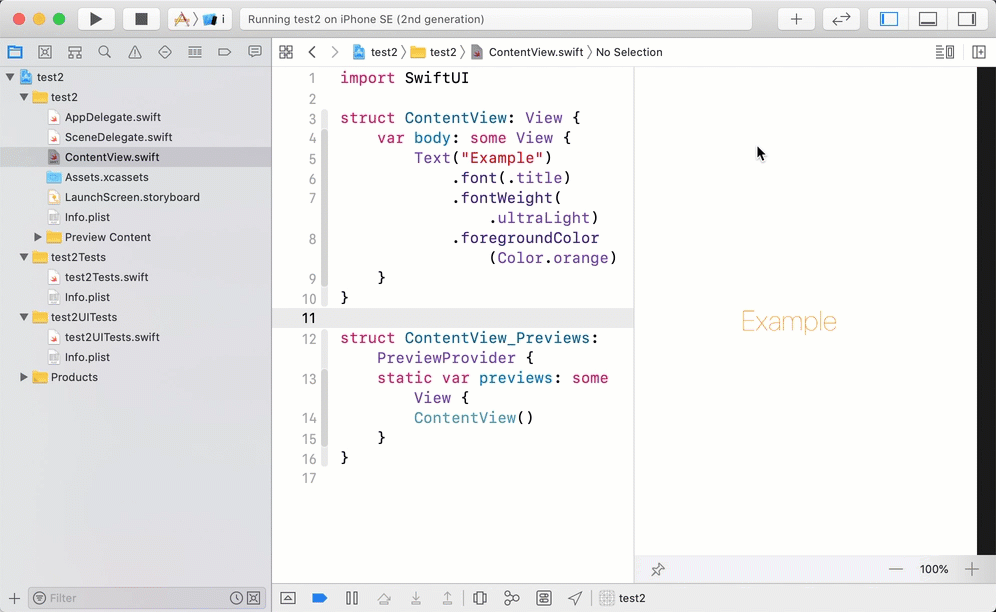
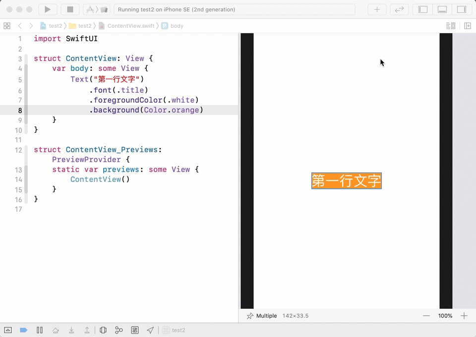
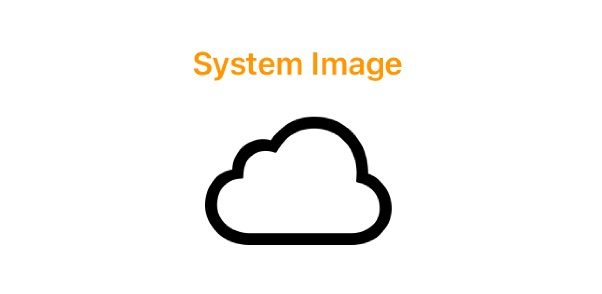
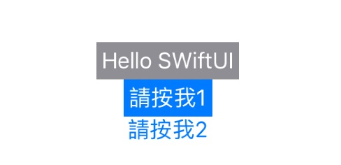

SwiftUI
Table of Contents
1 iOS app 的開發界面: UIKit v.s. SwiftUI
1.1 UIKit 與 SwiftUI 的差異性
1.1.1 系統需求
UIKit 是從 Xcode1 就一直存在的 Framework；而 SwiftUI 則是 2019/6 WWDC 所發表的全新用來繪製 UI 的 Framework。因此，SwiftUI 必須搭配 iOS13+ 和 MacOS10.15+。1
1.1.2 底層語言
UIKit 底層仍為 Objecitve-C；而 SwiftUI 則是完完全全用 Swift 打造的 Framework。
1.1.3 語法簡潔度
SwiftUI 產生一顯示文字的元件更精簡潔了。
1.1.4 跨平台
跨平台指的非跨 Android(但希望有那麼一天是可以支援的😀)。跨平台指的是使用 SwiftUI 所開發的專案，可以同時支援 macOS、watchOS、tvOS 等系統。引用一句 WWDC2019 SwiftUI 演講者所說的一句話。
Learn once, apply everywhere.
1.1.5 Automatic Preview
這是此次 SwiftUI 最大的亮點之一，所謂 Automatic Preview，意思指的是即時預覽，即我們一邊調整程式碼的同時，也可以立即看到修改後的結果。
1.1.6 自動支援進階功能
SwiftUI 本身即支援 Dynamic Type、Dark Mode、 Localization 等等。這邊特別來講一下 UIKit 和 SwiftUI 在文字設定上有關於 Dark Mode 的差異，UIKit 若是無特別指定文字的顏色(意即使用 Default 的選項)，在 Light Mode 字體會是白色；相對的在 Dark Mode 即會是白色，這點跟 SwiftUI 沒有特別的差異，但是 SwiftUI 除了 Default 外，還有 Secondary，如果還不喜歡的話，還有第三個選項，就是在 Assets 自行設定 Light Mode 和 Dark Mode 分別要顯示的顏色。

Figure 1: UIKit 與 SwiftUI 的差異性比較圖
1.2 SwiftUI vs UIKit: Benefits and Drawbacks
1.2.1 Drawbacks of SwiftUI 2
- It supports only iOS 13 and Xcode 11. By switching to them, you abandon users of older versions of iOS, which is a radical move devoid of concern for the user. But since Apple annually updates its list of supported iOS versions, I think SwiftUI will be used more over the next two years as users install the latest iOS version.
- It’s still very young, so there isn’t much data on Stack Overflow. This means that you can’t get much help resolving complicated issues.
- It doesn’t allow you to examine the view hierarchy in Xcode Previews.
1.2.2 Benefits of SwiftUI 2
- It’s easy to learn, and the code is simple and clean.
- It can be mixed with UIKit using UIHostingController.
- It allows you to easily manage themes. Developers can easily add dark mode to their apps and set it as the default theme, and users can easily enable dark mode. Besides, it looks awesome.
- SwiftUI provides mechanisms for reactive programming enthusiasts with BindableObject, ObjectBinding, and the whole Combine framework.
- It offers Live Preview. This is a very convenient and progressive way to see the results of code execution in real time without having to build. I’m not sure if it somehow affects the processor. So far, I’ve noticed a delay provoked by the use of Live Preview, but I think Apple will soon make improvements.
- SwiftUI no longer needs Interface Builder. It was replaced by Canvas, an interactive interface editor. When writing code, the visual part in Canvas is automatically generated, and when you create visual presentation elements, they automatically appear in the code.
- Your application will no longer crash if you forget to update the @IBOutlet association with the variable.
- There’s no AutoLayout or related problems. Instead, you use things like HStack, VStack, ZStack, Groups, Lists, and more. Unlike AutoLayout, SwiftUI always produces a valid layout. There’s no such thing as an ambiguous or unsatisfiable layout. SwiftUI replaces storyboards with code, making it easy to create a reusable view and avoid conflicts related with the simultaneous use of one project by the development team.
2 AppDelegate v.s. SceneDelegate
- SceneDelegate 為 Xcode11 所帶來的變化(可參考官方文件 WWDC2019)，放在 SwiftUI 提似乎不太合適，但是在接下來在提到 SwiftUI App 的生命週期時會帶到，所以這邊就大概提一下。
- AppDelegate 原來的職責為負責 App 的生命週期和 UI 生命週期，在 Xcode11 後，AppDelegate 將 UI 的生命週期(Scene Session)交給 SceneDelegate。原 Xcode10
- 使用 Swift 為 User Interface 的專案 Launch 的生命週期為 AppDelegate → ViewController，而使用 SwiftUI 為 User Interface 的專案則變成為 AppDelegate → SceneDelegate → ContentView，原本應該出現在 AppDelegate 的 applicationWillEnterForeground(_:) 等相關 App 到前、背景等相關的生命週期邏輯也都移至 SceneDelegate 裡了，method 名稱 application 的前綴字也都更改為 scene 了。3
2.1 SceneDelegate.swift
1: import UIKit 2: import SwiftUI 3: 4: class SceneDelegate: UIResponder, UIWindowSceneDelegate { 5: 6: var window: UIWindow? 7: 8: func scene(_ scene: UIScene, willConnectTo session: UISceneSession, options connectionOptions: UIScene.ConnectionOptions) { 9: // Use this method to optionally configure and attach the UIWindow `window` to the provided UIWindowScene `scene`. 10: // If using a storyboard, the `window` property will automatically be initialized and attached to the scene. 11: // This delegate does not imply the connecting scene or session are new (see `application:configurationForConnectingSceneSession` instead). 12: 13: // Create the SwiftUI view that provides the window contents. 14: let contentView = ContentView() 15: 16: // Use a UIHostingController as window root view controller. 17: if let windowScene = scene as? UIWindowScene { 18: let window = UIWindow(windowScene: windowScene) 19: window.rootViewController = UIHostingController(rootView: contentView) 20: self.window = window 21: window.makeKeyAndVisible() 22: } 23: } 24: 25: func sceneDidDisconnect(_ scene: UIScene) { 26: // Called as the scene is being released by the system. 27: // This occurs shortly after the scene enters the background, or when its session is discarded. 28: // Release any resources associated with this scene that can be re-created the next time the scene connects. 29: // The scene may re-connect later, as its session was not neccessarily discarded (see `application:didDiscardSceneSessions` instead). 30: } 31: 32: func sceneDidBecomeActive(_ scene: UIScene) { 33: // Called when the scene has moved from an inactive state to an active state. 34: // Use this method to restart any tasks that were paused (or not yet started) when the scene was inactive. 35: } 36: 37: func sceneWillResignActive(_ scene: UIScene) { 38: // Called when the scene will move from an active state to an inactive state. 39: // This may occur due to temporary interruptions (ex. an incoming phone call). 40: } 41: 42: func sceneWillEnterForeground(_ scene: UIScene) { 43: // Called as the scene transitions from the background to the foreground. 44: // Use this method to undo the changes made on entering the background. 45: } 46: 47: func sceneDidEnterBackground(_ scene: UIScene) { 48: // Called as the scene transitions from the foreground to the background. 49: // Use this method to save data, release shared resources, and store enough scene-specific state information 50: // to restore the scene back to its current state. 51: } 52: } 53: 54: struct SceneDelegate_Previews: PreviewProvider { 55: static var previews: some View { 56: /*@START_MENU_TOKEN@*/Text("Hello, World!")/*@END_MENU_TOKEN@*/ 57: } 58: }
3 UIKit
4 SwiftUI
4.1 學習資源
4.2 使用 SwiftUI 開啟新專案 3
- 首先，打開 Xcode，並點擊 Create new Xcode project。在 iOS 之下選擇 Single View App，並為專案命名。
- 然後在下方勾選 Use SwiftUI 的選項，如果沒有勾選該選項的話，Xcode 會自動產生 storyboard 檔案(UIKit)。
- Xcode 會自動幫你創建一個名為 ContentView.swif 的檔案，Xcode 會在程式碼的右邊呈現一個即時的預覽視窗(preview), 點選 resume 鈕生成預覽畫面(會花一點時間)。
4.2.1 ContentView.swift
1: import SwiftUI 2: 3: struct ContentView: View { 4: var body: some View { 5: Text("文字") 6: } 7: } 8: 9: struct ContentView_Previews: PreviewProvider { 10: static var previews: some View { 11: ContentView() 12: } 13: }
4.3 Text
4.3.1 改變 Text 的屬性
- 改變 component 有兩種方式：工具列、code
- Attributes
- frame
- foregroundColor
- background
- font
4.3.1.1 SwiftUI Inspector:
- on Text object (in preview screen): CMD + click
- select Show SwiftUI Inspector
- change Text, Font, Color
- Monitor the corresponding code changes in code window

Figure 2: SwiftUI Inspector
4.3.1.2 Inspector frame

Figure 3: SwiftUI Inspector
4.3.1.3 code
於 Text(“…”)後加上屬性 function 或修改其他屬性
 *
4.4 VStack
一個以上的物件都要放在 Stack 中，Stack 與 Stack 可相互包含，加入方式有二：
4.4.1 由工具列 drag: Xcode 會自動加入相對的 code

Figure 4: Drag component from toolbar
4.4.2 coding
1: import SwiftUI 2: 3: struct ContentView: View { 4: var body: some View { 5: VStack { 6: Text("第一行文字") 7: Text("第二行文字") 8: } 9: } 10: } 11: 12: struct ContentView_Previews: PreviewProvider { 13: static var previews: some View { 14: ContentView() 15: } 16: }
Figure 5: VStack
4.4.3 SwiftUI 撰寫原則
- body 恆為只能 return 一物件。
- 若有多個物件時，一定得放在 Stack 裡。
4.5 HStack
1: import SwiftUI 2: 3: struct ContentView: View { 4: var body: some View { 5: HStack { 6: VStack { 7: Button("請按我") { 8: print("TEST") 9: } 10: .frame(width: 60, height: 30, alignment: .center) 11: .foregroundColor(.white) 12: .background(Color.green) 13: Button("別亂按") { 14: print("QQ") 15: } 16: } 17: VStack { 18: Text("第一行文字") 19: .frame(width: 100, height: 30, alignment: .center ) 20: .foregroundColor(.white) 21: .background(Color.orange) 22: Text("第二行文字") 23: .frame(width: 100, height: 30, alignment: .center) 24: .foregroundColor(.white) 25: .background(Color.red) 26: } 27: } 28: } 29: } 30: 31: struct ContentView_Previews: PreviewProvider { 32: static var previews: some View { 33: ContentView() 34: } 35: }
Figure 6: HStack
4.6 Image
4.6.1 System Image
4.6.1.1 SF Symbols 4
4.6.1.2 從 iOS 13 開始，Apple 介紹了一個名為 SFSymbols 的新功能。SF Symbols 這功能由 Apple 所設計，當中集合了 1500 多個可以在 App 之中使用的符號。3
4.6.1.3 Download SF Symbols app
4.6.1.4 code
1: import SwiftUI 2: 3: struct ContentView: View { 4: var body: some View { 5: VStack { 6: Text("System Image") 7: .font(.headline) 8: .foregroundColor(.orange) 9: Image(systemName: "icloud") 10: .resizable() 11: .scaledToFit() 12: .frame(width: 100, height: 80, alignment: .center) 13: } 14: } 15: } 16: 17: struct ContentView_Previews: PreviewProvider { 18: static var previews: some View { 19: ContentView() 20: } 21: }
4.6.1.5 Demo

Figure 7: Images-1
4.6.2 Customized Image 語法
- Drag image into Project folder Assets.xcassets
- Add following code
1: Image("ImageName") //file name in Assets.xcassets 2: .resizable() 3: .scaledToFit() 4: .frame(width: 200, height: 160, alignment: .center)
4.6.3 Attributes
1: import SwiftUI 2: 3: struct ContentView: View { 4: var body: some View { 5: VStack { 6: Text("Albert Camus") 7: .font(.title) 8: .foregroundColor(.white) 9: .background(Color.orange) 10: Image("Albert-Camus") 11: .resizable() 12: .scaledToFill() 13: .frame(width: 200, height: 200, alignment: .center) 14: .clipShape(Circle()) 15: 16: } 17: } 18: } 19: 20: struct ContentView_Previews: PreviewProvider { 21: static var previews: some View { 22: ContentView() 23: } 24: }
Figure 8: Images-2
4.7 Button
4.7.1 語法
1: //... 2: Button("Title") { 3: //action 4: } 5: 6: Button(action: <#T##() -> Void#>, label: <#T##() -> _#>) 7: //...
4.7.2 範例: 按下 Button，改變 Text title
1: struct ContentView: View { 2: @State private var title = "Hello SWiftUI" 3: 4: var body: some View { 5: VStack { 6: Text(verbatim: title) 7: .padding(4) 8: .foregroundColor(.white) 9: .background(Color.gray) 10: Button(action: { 11: self.title = "Good Day" 12: }) { 13: Text("請按我1") 14: .foregroundColor(.white) 15: .padding(4) 16: .background(Color.blue) 17: } 18: Button("請按我2") { 19: self.title = "Good night..." 20: } 21: } 22: } 23: }
4.7.3 Demo

Figure 9: Button
4.8 TextField
4.8.1 語法
1: @State private var 變數="值" 2: TextField("提示文字", text: $變數)
4.8.2 範例: 於 TextField 輸入資料，顯示於 Text 中
1: import SwiftUI 2: 3: struct ContentView: View { 4: @State private var title = "" 5: 6: var body: some View { 7: VStack { 8: Text(verbatim: "Hello "+title) 9: HStack { 10: Text("Your Name: ") 11: TextField("請輸入姓名:", text: $title) 12: } 13: } 14: } 15: } 16: 17: struct ContentView_Previews: PreviewProvider { 18: static var previews: some View { 19: ContentView() 20: } 21: }
4.8.3 Demo
Figure 10: Button
5 Customize UI Components
SwiftUI 提供豐富的 modifier 幫助我們設計客製 UI 元件的樣式，諸如陰影，旋轉等效果皆可透過 modifier 實現，還可以搭配方便的拖曳加入相關程式碼。5